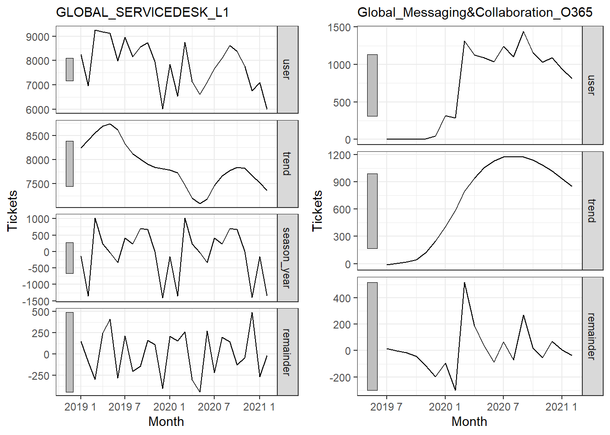

IT Service Analytics
1
Read Data
1.1
Setup Environment
1.2
Data Review
2
Explore Data
2.1
Data by Assignment
2.2
Data visualization
2.3
Data visualization for top services
3
Data trend
3.1
Time series for top services
Published with bookdown
IT Service Analytics
Chapter 3
Data trend
3.1
Time series for top services
